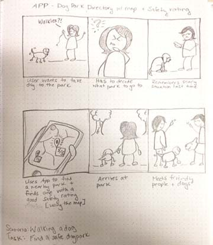

Bark Park App Design
Bark Park is a dog park navigation and rating app for Ottawa. The process which lead to the creation of this app included empathy mapping, market research, prototyping, and 2 rounds of usability testing.


- 

Bark Park is a dog park navigation and rating app for Ottawa. The process which lead to the creation of this app included empathy mapping, market research, prototyping, and 2 rounds of usability testing.